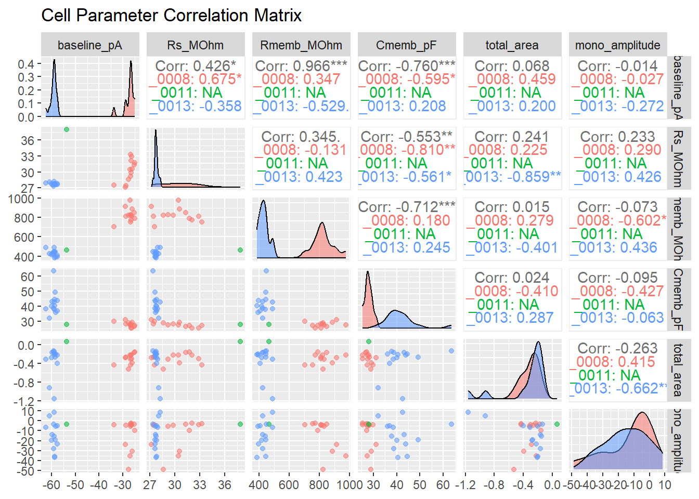

Code
# Load required libraries for ABF file parsing, data manipulation, and interactive visualization
library(readABF)
library(tidyverse)
library(plotly)
library(GGally)
library(DT)# Load required libraries for ABF file parsing, data manipulation, and interactive visualization
library(readABF)
library(tidyverse)
library(plotly)
library(GGally)
library(DT)#' Extract an individual sweep from a loaded ABF structure
#' @param sweep_n Integer index of the target sweep
#' @param abf Loaded ABF object containing raw data
#' @return A data frame containing time, current/voltage, and sweep metadata
extract_sweep <- function(sweep_n, abf) {
abf |>
as.data.frame(sweep = sweep_n) |>
mutate(sweep = sweep_n)
}
#' Convert all sweeps within an ABF structure into a unified tidy data frame
#' @param abf Loaded ABF object
#' @return Consolidated data frame of all sweeps
abf_to_df <- function(abf) {
map(1:length(abf$data), extract_sweep, abf = abf) |>
bind_rows()
}
#' Generalized function to calculate response amplitudes or integrated areas
#' @param data Cleaned synaptic response data frame
#' @param bl_tw Numeric vector defining the baseline window c(start, end)
#' @param resp_tw Numeric vector defining the response measurement window c(start, end)
#' @param param Character string specifying metric type ("amplitude" or "area")
#' @return A summarized data frame with computed response parameters per sweep
calculate_response <- function(data, bl_tw, resp_tw, param) {
data |>
group_by(file, sweep) |>
mutate(
current_pA = current_pA - mean(current_pA[between(time_s, bl_tw[1], bl_tw[2])], na.rm = TRUE)
) |>
filter(between(time_s, resp_tw[1], resp_tw[2])) |>
summarise(
parameter = case_when(
param == "amplitude" ~ min(current_pA, na.rm = TRUE),
param == "area" ~ sum(current_pA, na.rm = TRUE) * 0.00005,
.default = NA_real_
),
.groups = "drop"
)
}# Locate and import all binary ABF files from the target directory
files <- list.files("../data/2025_03_24/", pattern = ".abf", full.names = TRUE)
ABFs <- map(files, readABF)
# Assign concise file identifiers based on filename substrings
names(ABFs) <- files %>% str_sub(-9, -5)
# Transform ABF list structures into tidy data frames
DFs <- map(ABFs, abf_to_df)
# Standardize non-standard column names across files
DFs <- map(DFs, rename,
time_s = `Time [s]`,
current_pA = any_of(c("Currnt0Pr [pA]", "Volt0Pr [pA]")))
# Retain only necessary variables to optimize memory usage
DFs <- map(DFs, select, time_s, current_pA, sweep)# Combine individual file data frames into a single master table
All_sweeps <- bind_rows(DFs, .id = "file")
# Filter protocol-specific records and assign experimental conditions and fiber stimulation types
All_sweeps <- All_sweeps %>%
filter(
file %in% c("_0008", "_0011", "_0013") |
(file == "_0010" & sweep <= 15)
) %>%
mutate(
stim = case_when(
file %in% c("_0008", "_0011", "_0013") ~ if_else(sweep <= 10, "AC", "C"),
file == "_0010" ~ "AC"
),
cond = case_when(
file %in% c("_0008", "_0010") ~ "control",
file == "_0011" ~ "noradrenalin",
file == "_0013" ~ "washout"
)
) %>%
mutate(
stim = as.factor(stim),
cond = as.factor(cond)
)# Filter voltage-step data within the test pulse temporal window
voltage_step_data <- All_sweeps |>
filter(between(time_s, 0.12, 0.22))
# Define time intervals for baseline, peak, and plateau metrics
baseline_tw <- c(0.14, 0.155)
peak_tw <- c(0.160, 0.165)
plateau_tw <- c(0.180, 0.198)
# Render interactive overview of voltage-step traces
plot_voltage_step <- ggplot(voltage_step_data, aes(x = time_s, y = current_pA, group = interaction(file, sweep), color = file)) +
geom_line(alpha = 0.6) +
geom_vline(xintercept = baseline_tw, color = "lightblue") +
geom_vline(xintercept = peak_tw, color = "pink") +
geom_vline(xintercept = plateau_tw, color = "lightgreen") +
theme_minimal() +
labs(title = "Voltage Step Traces", x = "Time (s)", y = "Current (pA)")
print(ggplotly(plot_voltage_step))
# Compute passive membrane properties (series resistance, total resistance, membrane resistance)
passive_parameters <- voltage_step_data |>
group_by(file, sweep) |>
summarise(
baseline_pA = mean(current_pA[between(time_s, baseline_tw[1], baseline_tw[2])], na.rm = TRUE),
peak_pA = min(current_pA[between(time_s, peak_tw[1], peak_tw[2])], na.rm = TRUE) - baseline_pA,
plateau_pA = mean(current_pA[between(time_s, plateau_tw[1], plateau_tw[2])], na.rm = TRUE) - baseline_pA,
Rs_MOhm = -10000 / peak_pA,
Rtotal_MOhm = -10000 / plateau_pA,
Rmemb_MOhm = Rtotal_MOhm - Rs_MOhm,
.groups = "drop"
)
# Fit exponential decay curve using non-linear least squares (SSasymp) to extract time constant (tau)
decay_tw <- c(0.1605, 0.175)
decay_fits <- voltage_step_data |>
filter(between(time_s, decay_tw[1], decay_tw[2])) |>
nest(.by = c(file, sweep)) |>
mutate(
models = map(data, possibly(\(x) nls(x, formula = current_pA ~ SSasymp(time_s, Asym, R0, lrc)))),
coefs = map(models, coef),
lrc = map_dbl(coefs, \(x) pluck(x, "lrc", .default = NA)),
tau = 1 / exp(lrc)
) |>
select(file, sweep, tau)
# Merge decay time constants and calculate membrane capacitance metrics
passive_parameters <- passive_parameters |>
left_join(decay_fits, by = c("file", "sweep")) |>
mutate(
Cmemb_approx_pF = tau / Rs_MOhm * 10^6,
Cmemb_pF = tau / (1 / (1 / Rs_MOhm + 1 / Rmemb_MOhm)) * 10^6
)
# Display interactive table of calculated passive parameters
passive_parameters |>
select(file, sweep, baseline_pA, Rs_MOhm, Rmemb_MOhm, Cmemb_pF) |>
DT::datatable(rownames = FALSE)# --- Quality Control (QC) Filtering (Optimized Limits) ---
baseline_lims <- c(-200, 0)
# Послаблюємо межі для Rs (з ±10% до ±25%), щоб файл з норадреналіном не відсіювався через природні коливання
Rs_lims <- c(
0.75 * median(passive_parameters$Rs_MOhm, na.rm = TRUE),
1.25 * median(passive_parameters$Rs_MOhm, na.rm = TRUE)
)
# Розширюємо межі для опору мембрани та ємності
Rm_lims <- c(
0.4 * median(passive_parameters$Rmemb_MOhm, na.rm = TRUE),
2.5 * median(passive_parameters$Rmemb_MOhm, na.rm = TRUE)
)
Cm_lims <- c(
0.4 * median(passive_parameters$Cmemb_pF, na.rm = TRUE),
2.5 * median(passive_parameters$Cmemb_pF, na.rm = TRUE)
)
# Evaluate records against QC boundary criteria
passive_parameters <- passive_parameters |>
ungroup() |>
select(file, sweep, baseline_pA, Rs_MOhm, Rmemb_MOhm, Cmemb_pF) |>
mutate(
QC = between(baseline_pA, baseline_lims[1], baseline_lims[2]) &
between(Rs_MOhm, Rs_lims[1], Rs_lims[2]) &
between(Rmemb_MOhm, Rm_lims[1], Rm_lims[2]) &
between(Cmemb_pF, Cm_lims[1], Cm_lims[2])
)
# Visualize normalized parameter distributions for quality control
plot_filtering <- ggplot(
data = passive_parameters |>
mutate(
bl_pc = baseline_pA / median(baseline_pA, na.rm = TRUE),
rs_pc = Rs_MOhm / median(Rs_MOhm, na.rm = TRUE),
rm_pc = Rmemb_MOhm / median(Rmemb_MOhm, na.rm = TRUE),
cm_pc = Cmemb_pF / median(Cmemb_pF, na.rm = TRUE)
) |>
select(file, sweep, bl_pc, rs_pc, rm_pc, cm_pc, QC) |>
pivot_longer(cols = c(bl_pc, rs_pc, rm_pc, cm_pc), names_to = "param", values_to = "percentage"),
aes(x = param, y = percentage)
) +
geom_boxplot(outliers = FALSE) +
geom_point(aes(group = interaction(file, sweep), color = QC), position = position_dodge(0.2)) +
geom_line(aes(group = interaction(file, sweep)), position = position_dodge(0.2), alpha = 0.2) +
ylim(0, 4) +
theme_minimal() +
labs(title = "Quality Control Filtering Diagnostics", x = "Parameter", y = "Normalized Value (% of Median)")
print(ggplotly(plot_filtering))
# Filter raw sweep dataset to retain exclusively QC-verified recordings
keep <- passive_parameters |> filter(QC) |> select(file, sweep)
sweeps_keep <- All_sweeps |>
inner_join(keep, by = c("file", "sweep"))# Isolate synaptic records within the target time window and filter strictly for AC fiber stimulation
# synaptic_responses <- sweeps_keep |>
# filter(between(time_s, 0.28, 0.40)) |>
# filter(stim == "AC")
synaptic_responses <- sweeps_keep |>
filter(between(time_s, 0.28, 0.40)) |>
filter(stim == "C")
# Define optimized time windows for baseline stability and response integration
bl_start <- 0.290
bl_end <- 0.295
ar_start <- 0.307
ar_end <- 0.380
bl_m_st <- 0.3140
bl_m_en <- 0.3148
m_st <- 0.3150
m_en <- 0.3300
# Visualize individual AC synaptic traces overlaid with analysis boundaries
synaptic_traces_plot <- ggplot(synaptic_responses, aes(x = time_s, y = current_pA, group = interaction(file, sweep), color = file)) +
geom_line(alpha = 0.5, show.legend = FALSE) +
geom_vline(xintercept = bl_start, color = "lightblue", linetype = "dashed") +
geom_vline(xintercept = bl_end, color = "lightblue", linetype = "dashed") +
geom_vline(xintercept = ar_start, color = "gold") +
geom_vline(xintercept = ar_end, color = "gold") +
theme_minimal() +
labs(title = "C Synaptic Responses Overview", x = "Time (s)", y = "Current (pA)")
print(ggplotly(synaptic_traces_plot))
# Normalize AC responses and calculate condition-specific averages for comparative visualization
synaptic_area_plot <- synaptic_responses |>
group_by(file, sweep) |>
mutate(current_pA = current_pA - mean(current_pA[between(time_s, bl_start, bl_end)], na.rm = TRUE)) |>
ungroup()
synaptic_average_plot <- synaptic_area_plot |>
group_by(cond, time_s) |>
summarise(current_pA = mean(current_pA, na.rm = TRUE), .groups = "drop")
# Render comparative condition traces plot for C stimulation
condition_comparison_plot <- ggplot(synaptic_area_plot, aes(x = time_s, y = current_pA, color = cond)) +
geom_line(aes(group = interaction(file, sweep)), alpha = 0.1, show.legend = FALSE) +
geom_line(data = synaptic_average_plot, aes(group = cond), linewidth = 1.2) +
geom_vline(xintercept = bl_start, color = "lightblue", linetype = "dashed") +
geom_vline(xintercept = bl_end, color = "lightblue", linetype = "dashed") +
geom_vline(xintercept = ar_start, color = "gold") +
geom_vline(xintercept = ar_end, color = "gold") +
coord_cartesian(ylim = c(-100, 25)) +
theme_minimal() +
labs(title = "C Synaptic Responses Comparison by Condition", x = "Time (s)", y = "Current (pA)", color = "Condition")
print(ggplotly(condition_comparison_plot))# Compute total integrated area for synaptic responses
synaptic_areas <- synaptic_responses |>
group_by(file, sweep) |>
mutate(current_pA = current_pA - mean(current_pA[between(time_s, bl_start, bl_end)], na.rm = TRUE)) |>
filter(between(time_s, ar_start, ar_end)) |>
summarise(total_area = sum(current_pA, na.rm = TRUE) * 0.00005, .groups = "drop")
# Extract peak monosynaptic amplitudes
synaptic_amplitude <- calculate_response(
synaptic_responses,
bl_tw = c(bl_m_st, bl_m_en),
resp_tw = c(m_st, m_en),
param = "amplitude"
) |>
rename(mono_amplitude = parameter)
# Merge passive properties with active synaptic parameters into a final dataset
final_dataset <- passive_parameters |>
filter(QC) |>
left_join(synaptic_areas, by = c("file", "sweep")) |>
left_join(synaptic_amplitude, by = c("file", "sweep"))
# Display final dataset table
final_dataset |>
DT::datatable(rownames = FALSE)# Export processed parameters to TSV file
write_tsv(final_dataset, file = "../Cell_2025_03_24_all_params.tsv")# Generate pairwise correlation matrix plot using ggpairs
final_dataset |>
select(file, baseline_pA, Rs_MOhm, Rmemb_MOhm, Cmemb_pF, total_area, mono_amplitude) |>
na.omit() |>
GGally::ggpairs(
aes(color = file, alpha = 0.6),
columns = 2:7,
title = "Cell Parameter Correlation Matrix",
progress = FALSE
)
# Scatter plot with linear regression trendline evaluating amplitude vs. total area relationship
plot_correlation <- ggplot(final_dataset, aes(x = mono_amplitude, y = total_area, color = file)) +
geom_point(size = 3, alpha = 0.7) +
geom_smooth(aes(group = 1), method = "lm", se = TRUE, color = "black", linetype = "dashed") +
theme_minimal() +
labs(
title = "Monosynaptic Amplitude vs. Total Area Relationship",
x = "Monosynaptic Amplitude (pA)",
y = "Total Area (pA*s)"
)
print(ggplotly(plot_correlation))`geom_smooth()` using formula = 'y ~ x'Warning: Removed 34 rows containing non-finite outside the scale range
(`stat_smooth()`).# Compute numeric Pearson correlation matrix table
numeric_correlation_matrix <- final_dataset |>
ungroup() |>
mutate(mono_amplitude = as.numeric(mono_amplitude)) |>
select(where(is.numeric), -sweep) |>
cor(use = "pairwise.complete.obs", method = "pearson")
numeric_correlation_matrix |>
round(3) |>
as.data.frame() |>
DT::datatable(options = list(pageLength = 10))